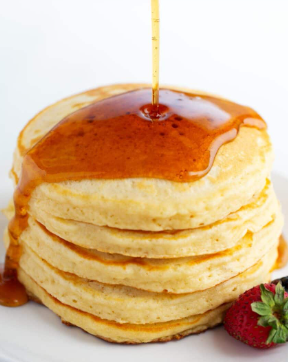
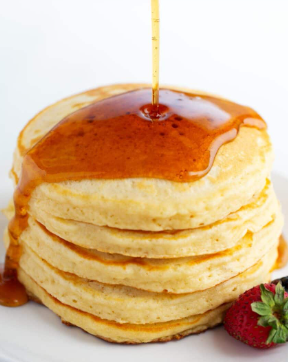

Fluffy Pancakes Recipe
Ingredients
- cup all-purpose flour
- 2 tablespoons sugar
- 2 teaspoons baking powder
- 1/4 teaspoon salt
- 1 cup milk
- 1 large egg
- 2 tablespoons melted butter
- 1 teaspoon vanilla extract
Instructions
- In a bowl, mix flour, sugar, baking powder, and salt.
- In another bowl, whisk milk, egg, melted butter, and vanilla.
- Pour the wet mixture into the dry ingredients and stir until just combined. Do not overmix.
- Heat a non-stick pan over medium heat and lightly grease it.
- Pour 1/4 cup batter for each pancake. Cook until bubbles appear on the surface, then flip and cook until
- Sprinkle cheese on one side of the omelette.
- Fold the omelette in half and cook for another minute until cheese melts.